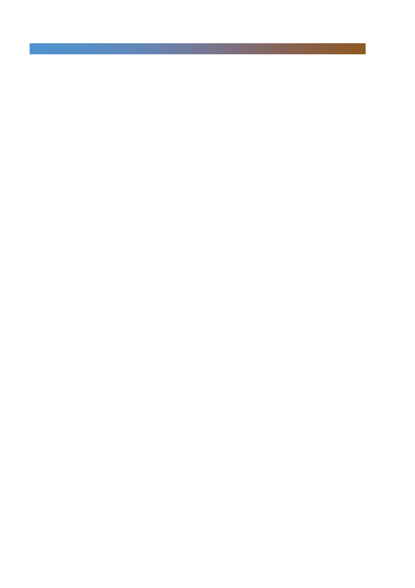

국내외 해외 경쟁력 회복 위한 노력 지속, 변화와 인내의 시기
- 내수 부문에서는 온라인/아리따움 채널 및 브랜드 경쟁력 강화, 전사적인 비용
절감 노력에 주력 예상
- 중국은 럭셔리 브랜드 비중 확대와 온라인 사업 강화 노력, 중국 사업 중 럭셔
리 브랜드 비중은 약 20%에 불과해 글로벌 사에 비해 현저하게 낮은 수준,
브랜드별 매출도 아직 낮은 수준으로 성장 잠재력은 높아. 또한 동남아/미주를
포함한 글로벌화로 대중국 의존도 낮추고 글로벌 브랜드력 확보를 위한 노력
- 내수 및 해외 사업 증가세 둔화 우려는 최근 실적 하향 및 주가 하락에 반영.
향후 중국인 관광객 회복 속도가 관전 포인트임. 한편, 동사의 실적 둔화는 내
수의 경우 중소형 브랜드 난립으로 인한 경쟁 심화, 중국 시장도 고가 시장에
서의 다소 더딘 대응과 중국 로컬 브랜드 고성장으로 인한 매스 시장 경쟁 심
화에 기인. 향후 동사의 전략 변화와 이로 인한 실적 회복 속도에 주목해야
- 2019년 예상 PER 30배 수준, 일본 화장품 3사 2019년 평균 29배, 글로벌
Top 3 평균 27배, 경쟁사 23배에 거래. 실적 추가 하향 가능성 상존하고 해외
경쟁업체 대비 밸류에이션 매력 낮음. 투자의견 ‘중립’ 유지